Examples Gallery#
Orbits#
TLE catalog management, TLE switching, high-fidelity propagation
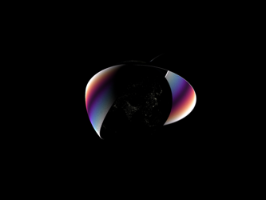
Propagating with Perturbations
Propagating with Perturbations

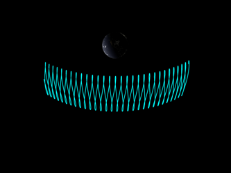
TLE Switching
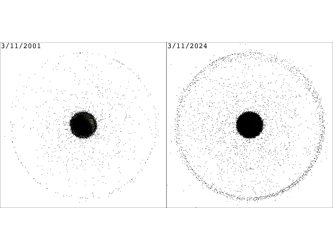
Propagating the catalog
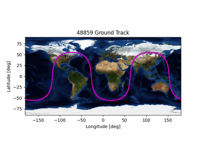
Ground Tracks
Light Curve Inversion#

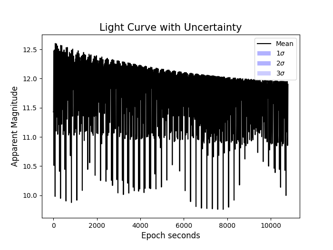
Shape Uncertainty
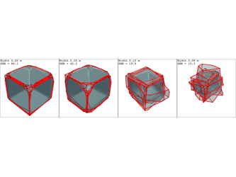
Inversion PDF
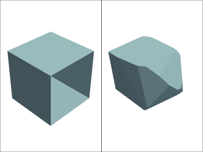
Face Uncertainty


Light Curves#
Simulating normalized convex and non-convex light curves, with and without noise, observer constraints, and orbital motion


Rotating Solar Panels


Light Curve Ambiguities
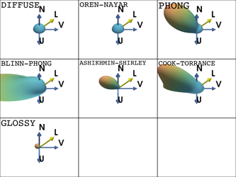
BRDFs in Action

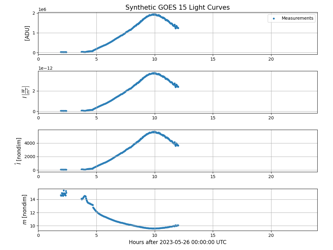
Light Curve Units
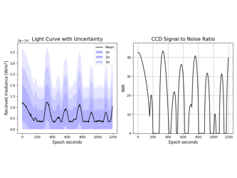
Light Curve Uncertainty

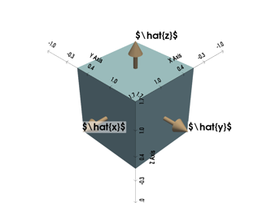
Types of Light Curves
Coordinate Frames#
Computing and visualizing coordinate frame transformations
Time Systems


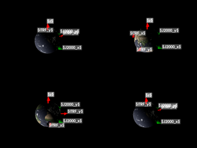
Equinoxes and Solstices

Environment#
Background optical noise sources, solar cycles
Luminous Efficiency Function


Background Signals at Zenith


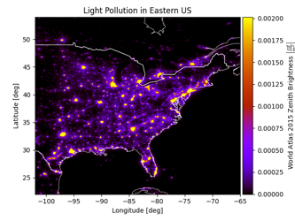
Zenith Light Pollution
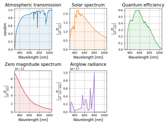
Astrometrical Spectra
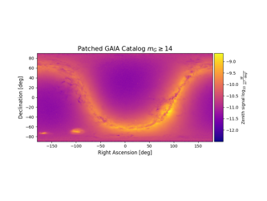
GAIA Patched Catalog
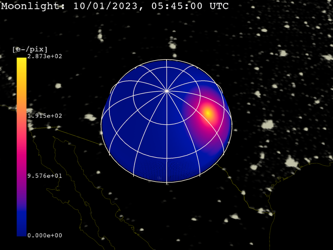
Background Signals

Plotting Options#
Visualizing the Earth and other things


Rigid Body Attitudes#
Visualizing various attitude profiles and parameterizations


Brightness Isosurfaces
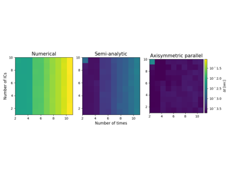
Torque-free Attitude Propagation
Torque-free Attitude Propagation
Observer#
Computing and visualizing things from the perspective of a geodetic observer


Local Sidereal Time
Conic Sensors


Azimuth/Elevation Conversion


Utility#
Supporting analyses

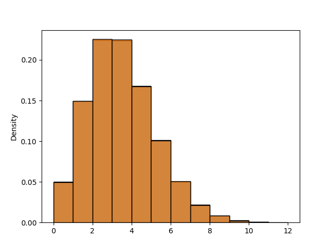
Fitting Poisson Variables


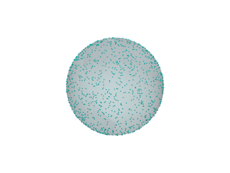
Samplers
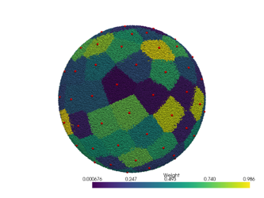
Spherical Voronoi Interpolation
Spherical Voronoi Interpolation

Graphics Background


3D Models#

Shape Interpolation Bracket


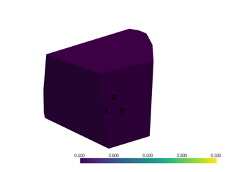
EGI Jacobian
CCD Characterization#


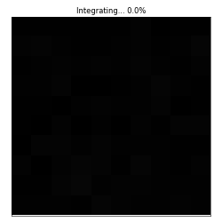
Noise Sampling

Airy Disk Gaussian Fit

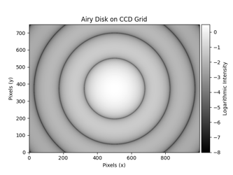
Airy Disk Diffraction
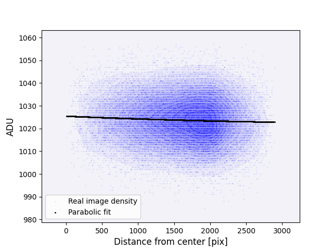
Background Shape
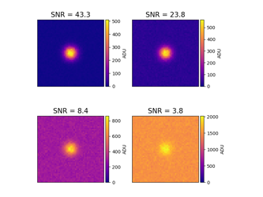
Signal-to-Noise Ratio (SNR)